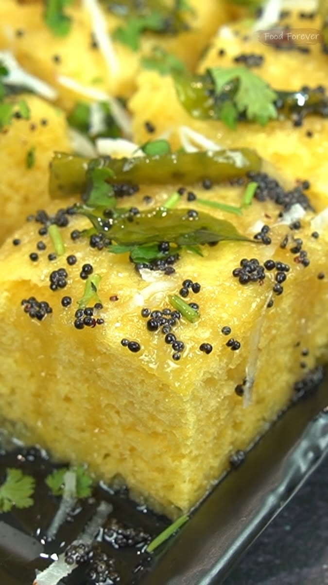
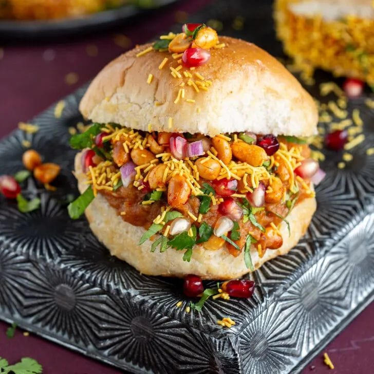
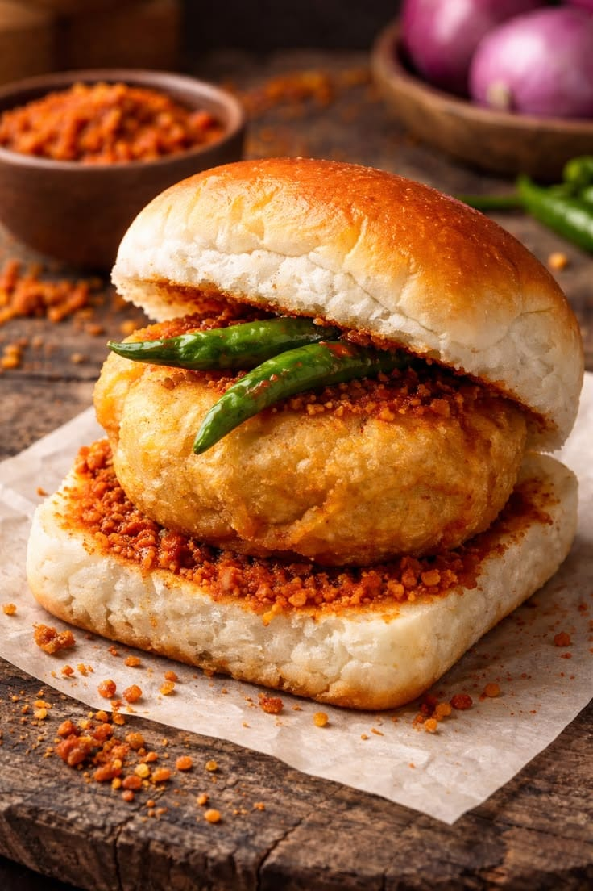
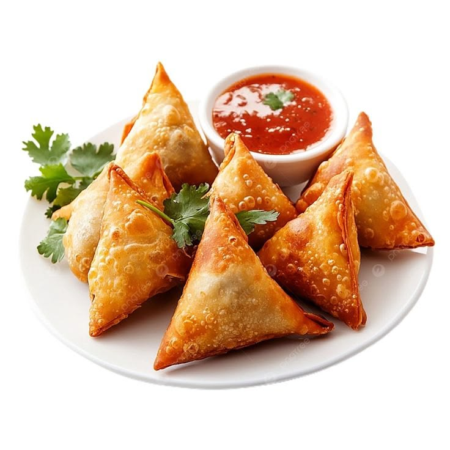
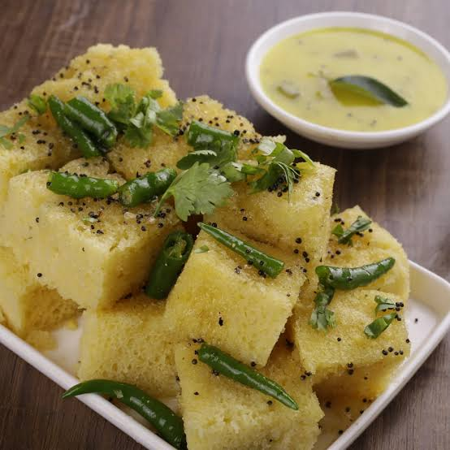

Something Delicious For Everyone
From soft and fresh khaman to crispy samosa and refreshing pani puri, enjoy your favourite snacks at Jalaram Khaman House.

Khaman
Fresh and soft Gujarati khaman.

Dabeli
Spicy, sweet and delicious dabeli.

Vada Pav
A classic Mumbai-style favourite.

Samosa
Crispy outside and delicious inside.
Made With Taste & Care
Fresh Food
Freshly prepared snacks for a delicious experience.
Authentic Taste
Traditional Gujarati flavours in every bite.
Many Choices
Khaman, chaats, fast food and much more.
Our Favourite Snacks

Nylon Khaman
Soft, fluffy and delicious Gujarati nylon khaman.
Vati Dal Khaman
Traditional Gujarati vati dal khaman, soft and delicious.
Pani Puri
Fresh & flavourful
Frankie
Perfect quick bite
Hungry Yet?
Visit Jalaram nasta House and enjoy your favourite snacks.
Find Us